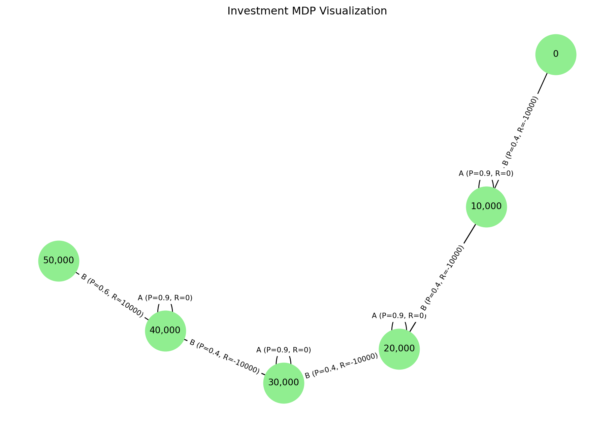

import networkx as nx
import matplotlib.pyplot as plt
# Define states and transitions
states = ["0", "10,000", "20,000", "30,000", "40,000", "50,000"]
actions = ["A", "B"] # A: Company A, B: Company B
# Define transitions as (from_state, action, to_state, probability, reward)
transitions = [
("10,000", "A", "10,000", 0.90, 0), # No profit in A
("10,000", "A", "20,000", 0.10, 10000), # Double profit in A
("10,000", "B", "0", 0.40, -10000), # Loss in B
("10,000", "B", "20,000", 0.60, 10000), # Double profit in B
("20,000", "A", "20,000", 0.90, 0),
("20,000", "A", "30,000", 0.10, 10000),
("20,000", "B", "10,000", 0.40, -10000),
("20,000", "B", "30,000", 0.60, 10000),
("30,000", "A", "30,000", 0.90, 0),
("30,000", "A", "40,000", 0.10, 10000),
("30,000", "B", "20,000", 0.40, -10000),
("30,000", "B", "40,000", 0.60, 10000),
("40,000", "A", "40,000", 0.90, 0),
("40,000", "A", "50,000", 0.10, 10000),
("40,000", "B", "30,000", 0.40, -10000),
("40,000", "B", "50,000", 0.60, 10000),
]
# Create a directed graph
G = nx.DiGraph()
# Add nodes (states)
for state in states:
G.add_node(state)
# Add edges (actions and transitions)
for (from_state, action, to_state, prob, reward) in transitions:
label = f"{action} (P={prob}, R={reward})"
G.add_edge(from_state, to_state, label=label)
# Draw the graph
pos = nx.spring_layout(G, seed=42) # For better positioning
plt.figure(figsize=(12, 8))
nx.draw_networkx_nodes(G, pos, node_size=2000, node_color="lightgreen")
nx.draw_networkx_labels(G, pos, font_size=10)
# Draw edges with labels (actions, probabilities, and rewards)
edge_labels = nx.get_edge_attributes(G, 'label')
nx.draw_networkx_edges(G, pos, arrowstyle='->', arrowsize=20)
nx.draw_networkx_edge_labels(G, pos, edge_labels=edge_labels, font_size=8)
plt.title("Investment MDP Visualization")
plt.axis("off")
plt.show()